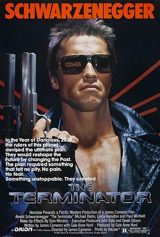

终结者 / The Terminator
又名：未来战士(港) / 魔鬼终结者(台)
看完Genesys来补的1，原来5里面出现了阿诺自己打自己啊 XD 84年的电影拍成这样真太厉害了，不会让人感到乏味
作品信息
| 导演 | 詹姆斯·卡梅隆 |
| 编剧 | 詹姆斯·卡梅隆 / 盖尔·安妮·赫德 / 小威廉·威谢尔 |
| 主演 | 阿诺·施瓦辛格 / 迈克尔·比恩 / 琳达·汉密尔顿 / 保罗·温菲尔德 / 兰斯·亨利克森 / 里克·罗索维奇 / 贝丝·莫塔 / 厄尔·伯恩 / 迪克·米勒 / 弗兰科·哥伦布 / 比尔·帕克斯顿 / 布莱恩·汤普森 / 小威廉·威谢尔 / 菲利普·戈登 / 哈丽特·梅丁 / 玛丽安妮·穆勒雷尔 / 达雷尔·马普森 / Shawn Schepps / Bruce M. Kerner / Brad Rearden / 斯坦·耶尔 / Norman Friedman / Barbara Powers / 奇诺·威廉姆斯 |
| 类型 | 动作 / 科幻 / 惊悚 |
| 制片国家/地区 | 美国 / 英国 |
| 语言 | 英语 / 西班牙语 |
| 上映日期 | 1992-06(中国大陆) / 1984-10-26(美国) |
| 片长 | 107分钟 |
| IMDb | tt0088247 |
最后一次看到是 2026-08-01T11:06:55+10:00 · 豆瓣原页